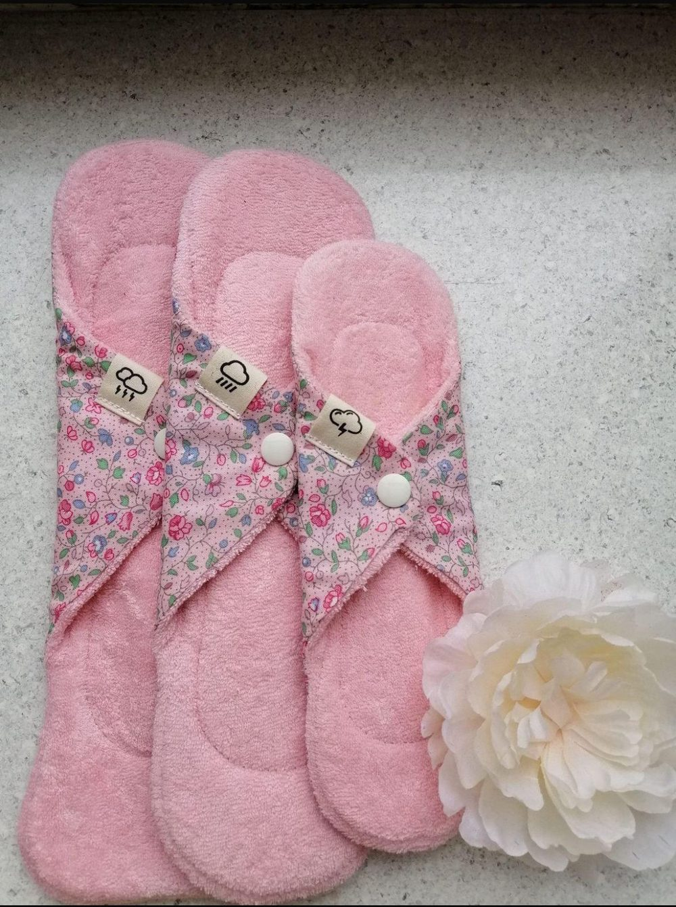
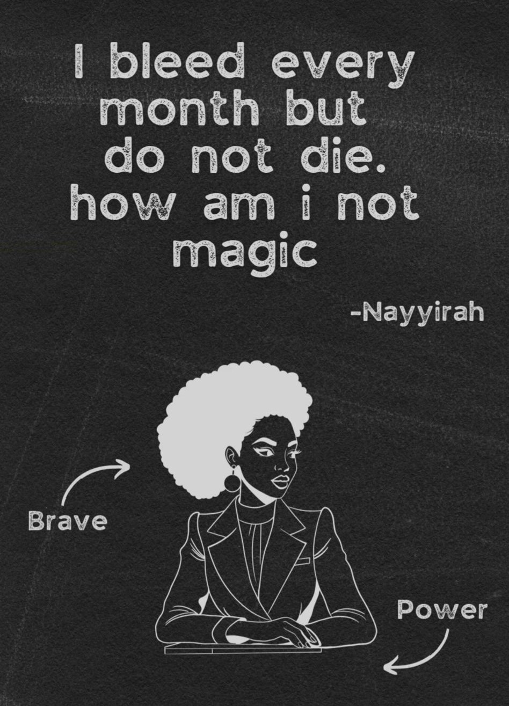
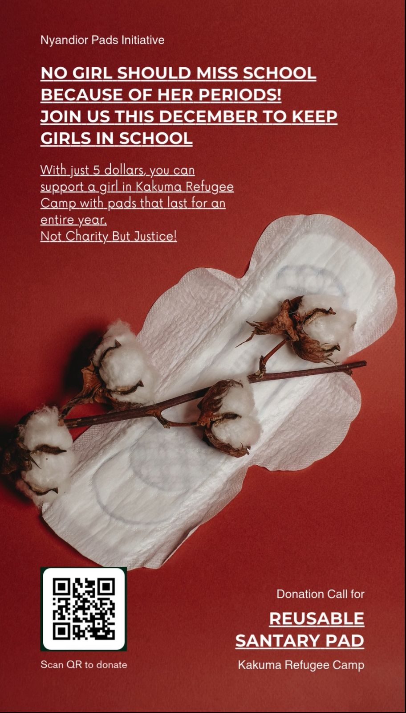
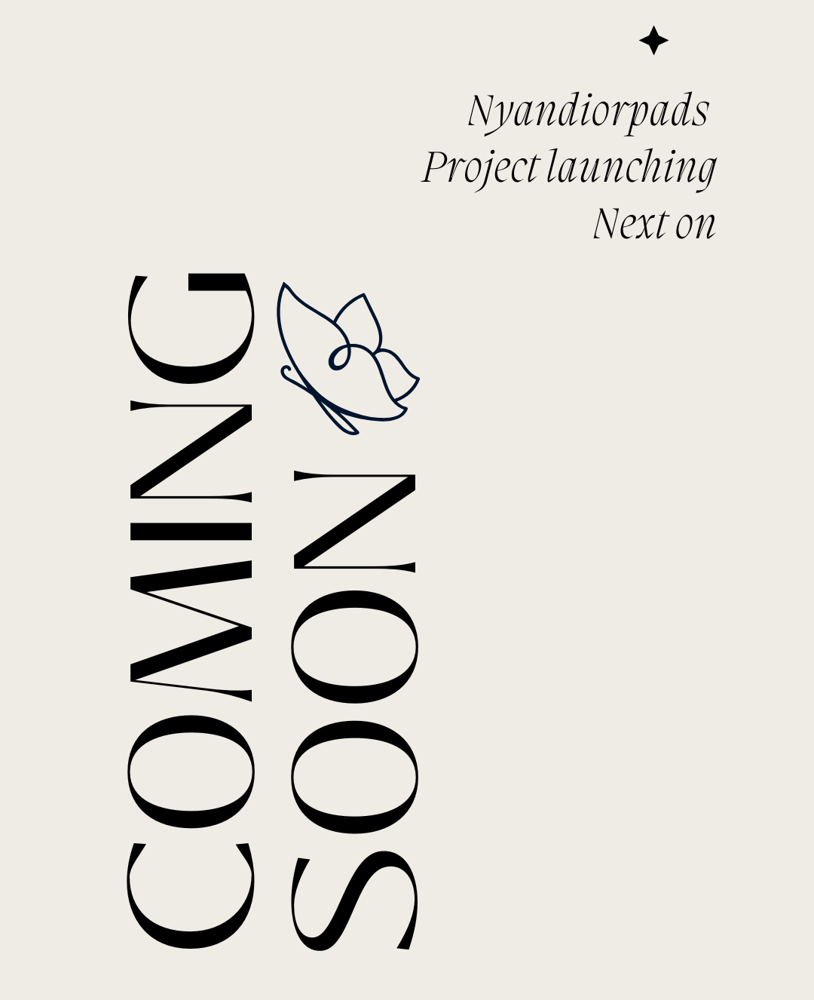
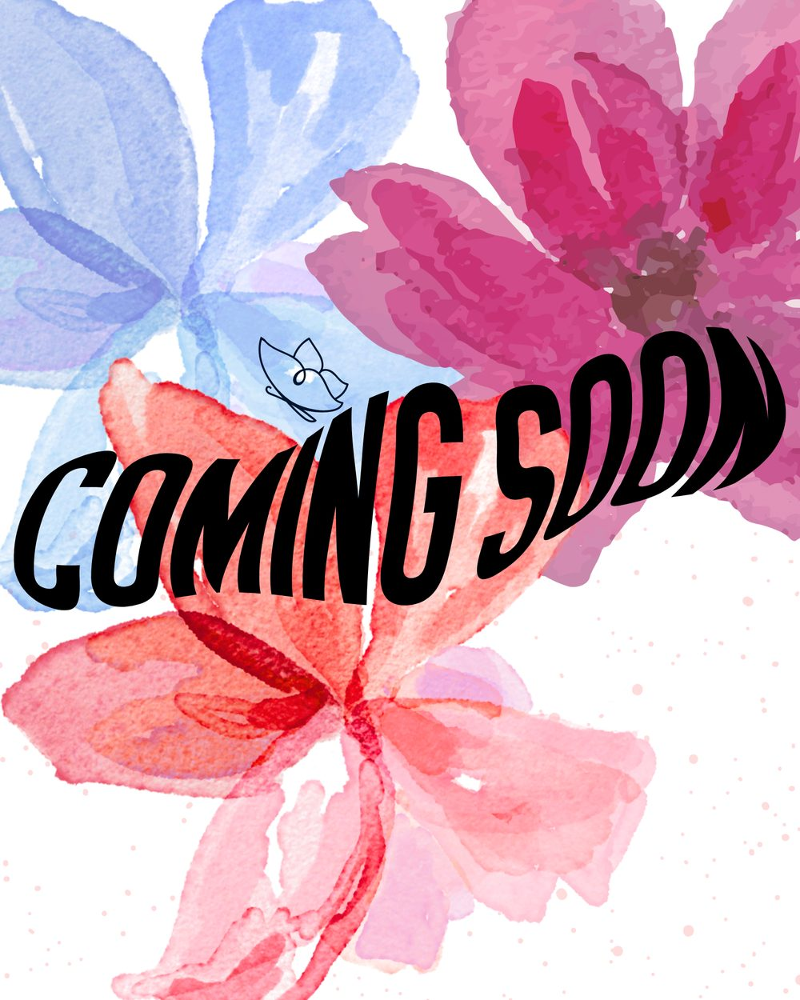
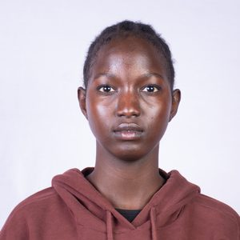

Our Product
We believe every girl deserves access to safe, sustainable and dignified menstrual products.

REUSABLES

DISPOSABLES

Providing access to reusable sanitary pads and menstrual hygiene education to
girls in Kakuma Refugee Camp and South Sudan.
NOT CHARITY BUT JUSTICE!
Every girl deserves the freedom to learn, grow and thrive. Our services ensure that menstruation is never a barrier.
Provide eco-friendly, washable pads to schoolgirls and women in Kakuma Refugee Camp and South Sudan.
Teach menstrual health management (MHM), reproductive health and self-care.
Empower women with skills to produce reusable pads using sewing machines and locally available materials.
We believe every girl deserves access to safe, sustainable and dignified menstrual products.


We're building sustainable, impactful initiatives to empower girls and transform communities. Here's what's next on our journey.

Without proper menstrual products, girls in Kakuma Refugee Camp miss up to 4 days of school each month leading to poor performance and dropout.
With just $5, you can support a girl with pads for an entire year.

This initiative is grounded in dignity not pity. We're working with local partners to ensure girls have access to safe, locally-made pads and the resources they need to thrive. It’s not about giving, it’s about equity and justice.

We’re launching a community-led food and wellness program to support the health of young girls in vulnerable regions. Nutritious meals, hygiene education and access to clean water will ensure they grow, learn and lead.
Our team works tirelessly to ensure that girls have access to safe, reusable sanitary pads and accurate menstrual education.
